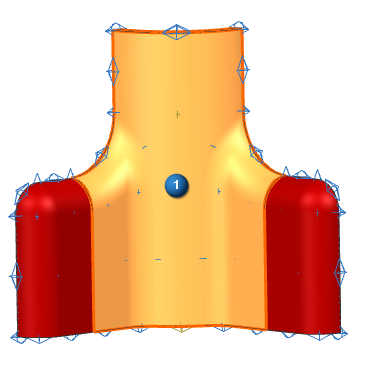
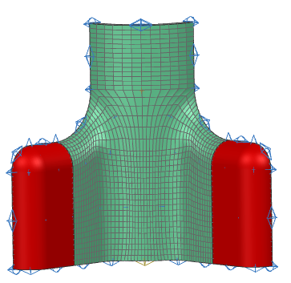

Create a swept mesh
Begin to create a swept mesh of hexahedral elements, using the mapped meshes you've created as a seed mesh.
 3D Swept Mesh (Mesh group)
3D Swept Mesh (Mesh group)
-
Until Target

-

 highlighted faces (8 faces total)
highlighted faces (8 faces total)

-
Select Target Face
-
highlighted face on the back side of the part

|
Note |
If necessary, use QuickPick to select this face. |
-
Destination Collector
-
 Automatic Creation
Automatic Creation -
Mesh Collector
Solid(1)
-
Apply

Leave the 3D Swept Mesh dialog box open for the next step.